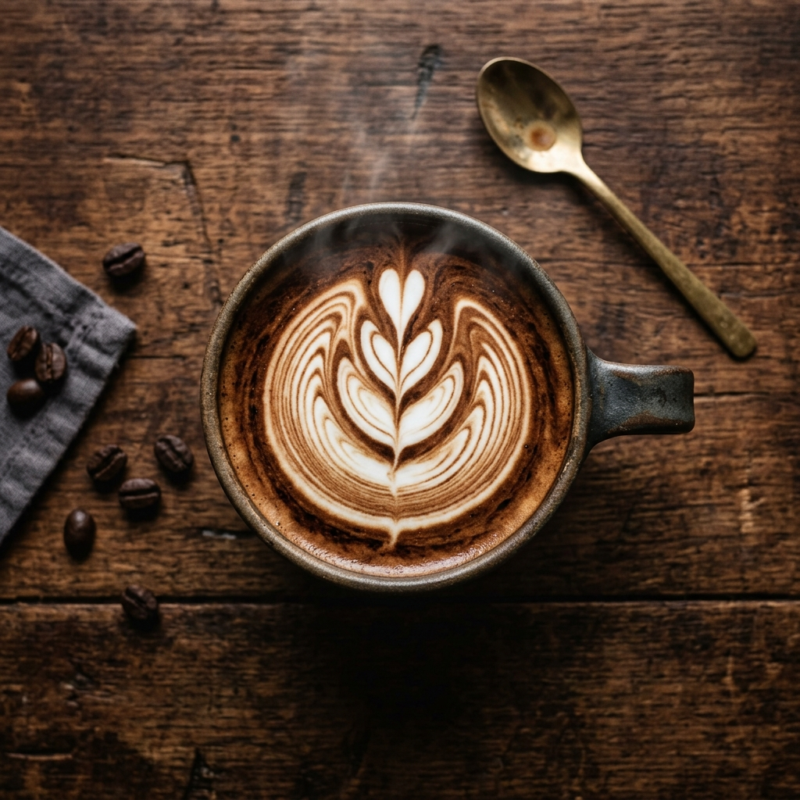
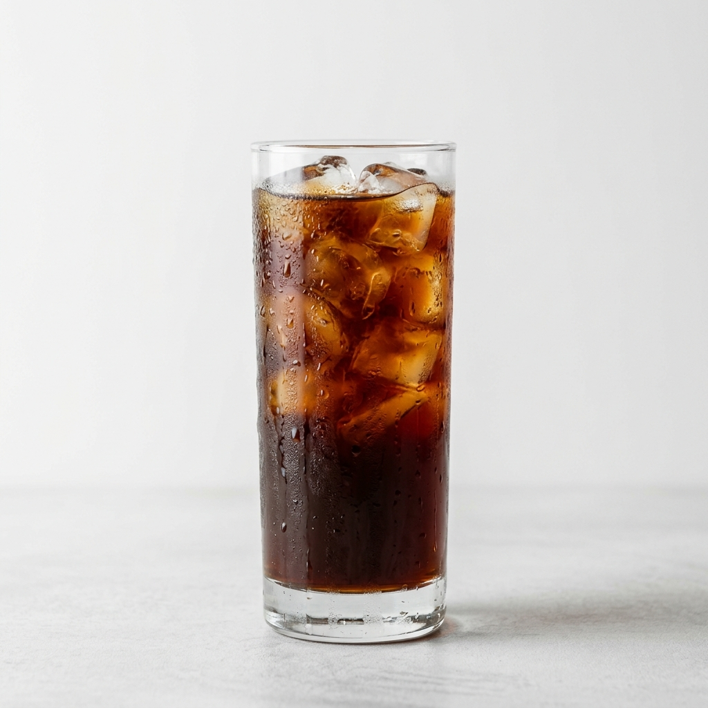
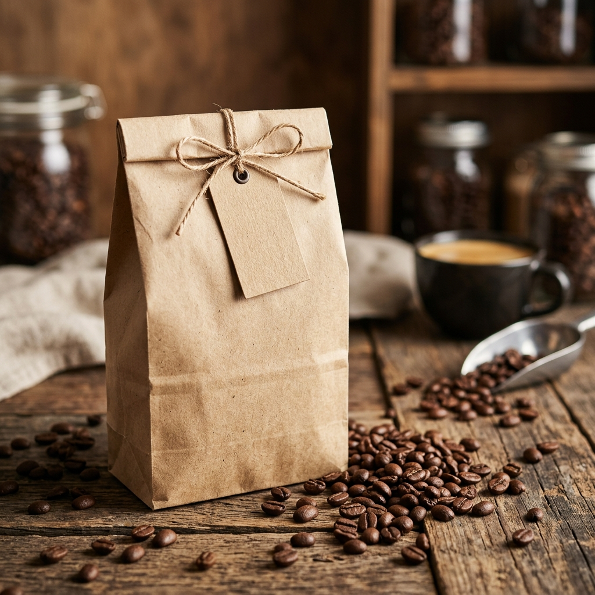

DESCUENTO EN TU PRIMER PEDIDO
Granos molidos en tu puerta.
Explorar Granos
DESCUENTO EN TU PRIMER PEDIDO
Granos molidos en tu puerta.
Explorar Granos
 Juan Pérez
Juan Pérez
Un servicio y producto de excelente calidad.
 Denilson Celi
Denilson Celi
Me gusta mucho el café y la página Web.
 Johana Naranjo
Johana Naranjo
Esperaba que fuera de una mejor calidad.

Espresso Artesanal
Doble extracción de granos de altura, tostado oscuro con notas de chocolate amargo y caramelo. La base de todas nuestras bebidas.

Cold Brew 24 h
Maceración en frío durante 24 horas. Resultado: concentrado suave, bajo en acidez y con una dulzura natural que no necesita azúcar.

Granos de Especialidad
Bolsa de 250 g · Origen único, selección de finca. Tostado artesanal en pequeños lotes para garantizar frescura y perfiles de sabor únicos.
Origen: Galápagos, Ecuador
Grano exótico cultivado en suelo volcánico frente al mar, con cuerpo sedoso y notas dulces a cacao.